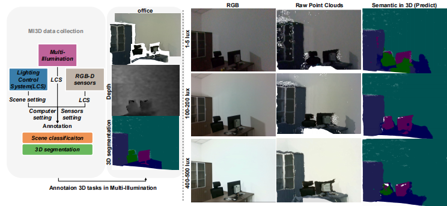

I am currently a Ph.D student in Software Engineering at the University of Electronic Science and Technology of China.
I received my MASc from the Department of Electrical and Computer Engineering, University of Waterloo, advised by Prof. Dayan Ban and Prof. Zhou Wang.
My research interests lie broadly in computer vision, deep learning, and 3D representation learning.
Publications
* indicates equal contribution

VPNeXt: Rethinking Dense Decoding for Plain Vision Transformer
Xikai Tang, Ye Huang*, Guangqiang Yin, Lixin Duan (*Corresponding author)
Xikai Tang, Ye Huang*, Guangqiang Yin, Lixin Duan (*Corresponding author)
Point-A: Memory Channel Attention-based Network for 3D Point Clouds

Semantic 2D-3D Data under Multi-Illuminance for Indoor Scene Understanding

Cyclic Style Generative Adversarial Network for Near Infrared and Visible Light Face Recognition
Fangzheng Huang, Xikai Tang, Chao Li, Dayan Ban
Fangzheng Huang, Xikai Tang, Chao Li, Dayan Ban

SCA-Net: Spatial and Channel Attention-based Network for 3D Point Clouds
Xikai Tang*, Karim Habashy, Fangzheng Huang, Chao Li, Dayan Ban
Xikai Tang*, Karim Habashy, Fangzheng Huang, Chao Li, Dayan Ban

A Survey on End-to-End Point Cloud Learning
Xikai Tang*, Fangzheng Huang, Chao Li, Dayan Ban
Xikai Tang*, Fangzheng Huang, Chao Li, Dayan Ban

Near-infrared and Visible Light Face Recognition: A Comprehensive Survey
Fangzheng Huang, Xikai Tang, Chao Li, Dayan Ban
Fangzheng Huang, Xikai Tang, Chao Li, Dayan Ban

Pedestrian Attribute Recognition with Feature Combination in Transformer with Attention Model
Xikai Tang, Zhikun Lin, Yiran Wang
Xikai Tang, Zhikun Lin, Yiran Wang
Activities
- Reviewer for ICME